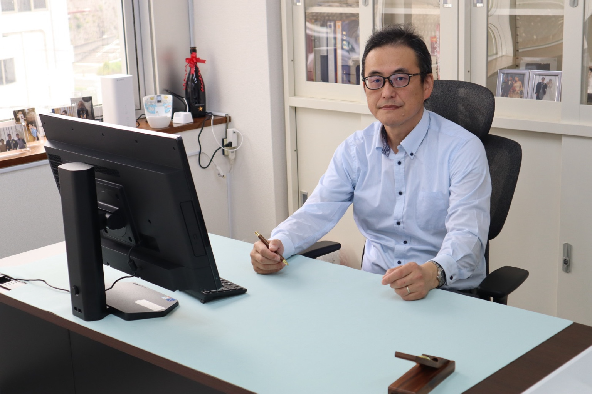

代表税理士挨拶

代表税理士の金瀬戸です。
私は、長年にわたり税務署に勤務し、統括国税調査官としての職務を経て退官後、税理士として登録いたしました。税務調査を「する側」と「受ける側」双方の視点を持ち合わせていることが私の強みです。
その経験を活かし、丁寧かつ的確な税務サポートを提供いたします。
業務内容
- 法人税・所得税・相続税などの申告業務
- 税務調査の事前対策・立会い
- 経営顧問・経営支援
- 相続・贈与のサポート
- 個人事業主・フリーランスのサポート
- 創業支援 法人設立アドバイス
- 年末調整・法定調書作成支援
事務所の風景

アクセス・連絡先
〒630-0252 奈良県生駒市山崎町4-10 サンアイビル3階
電話：070-6926-2670
メール：atsushikaneseto@gmail.com